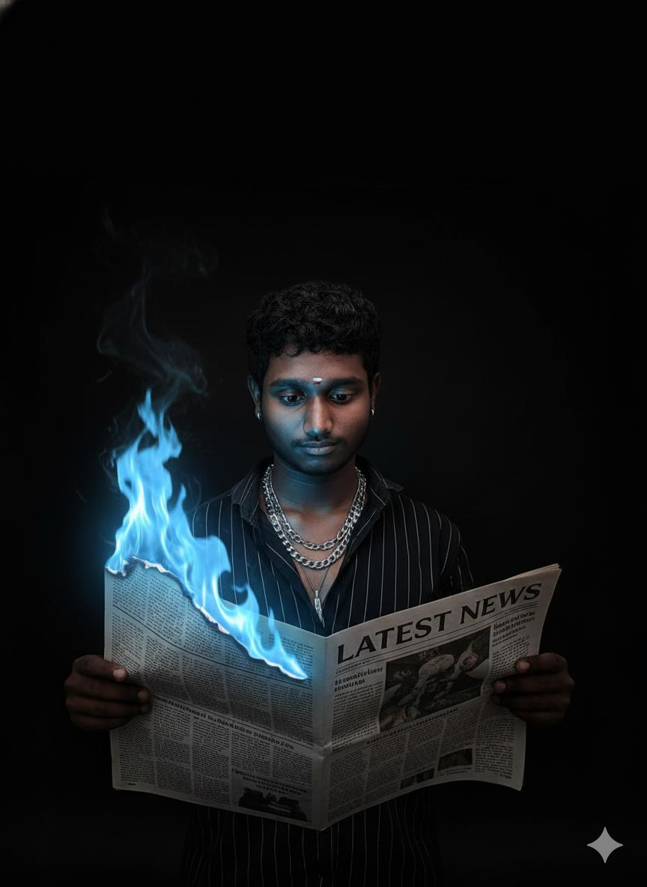
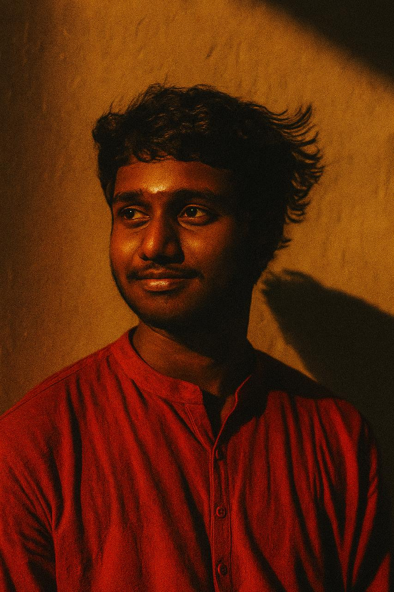
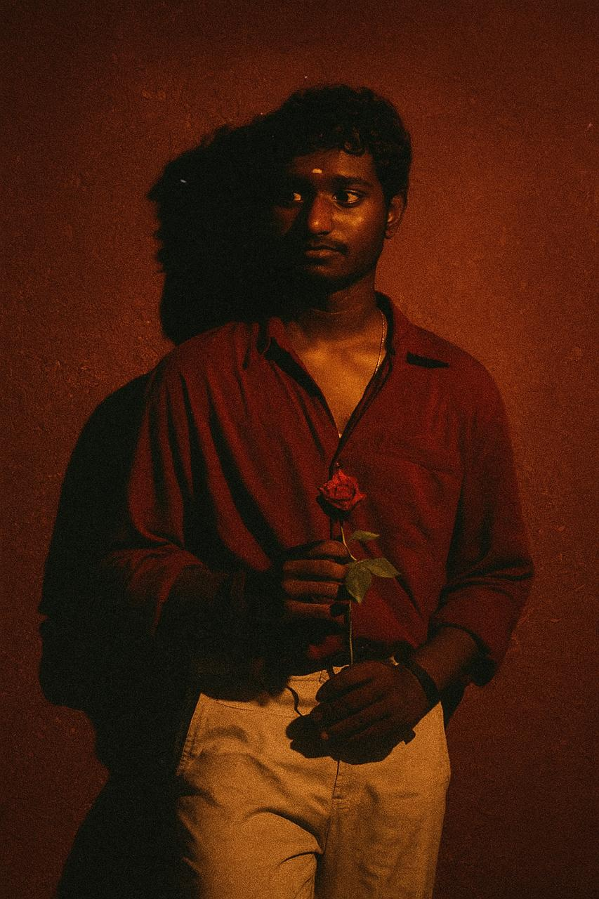

"Even if you fall, rise again.
Do not stand still blaming fate.
Even if darkness comes, light will follow.
If today is hardship, tomorrow will be success."
India is a great country, and in its southern part lies the state of Tamil Nadu. My hometown, Jayankondam, is a very beautiful and peaceful place. With its green surroundings, good people, and rich culture, this place stands out as special. In Jayankondam, the name “Maran” is spoken with pride; respected by everyone and known for confidence and courage, I proudly call him the King of my area.



In the dark streets of the city, he carved his name with power and presence. Even when he walks in silence, his arrival feels like the warning of a storm. Authority rests in his hands—not just through fear, but through control and calculated decisions. To his friends, he is a shadow of protection; to his enemies, he strikes like lightning. Every road in the city knows his story. Though he walks a path where justice and injustice sometimes blur, he lives by his own rules. That is why the city remembers him not just as a man, but as a force.